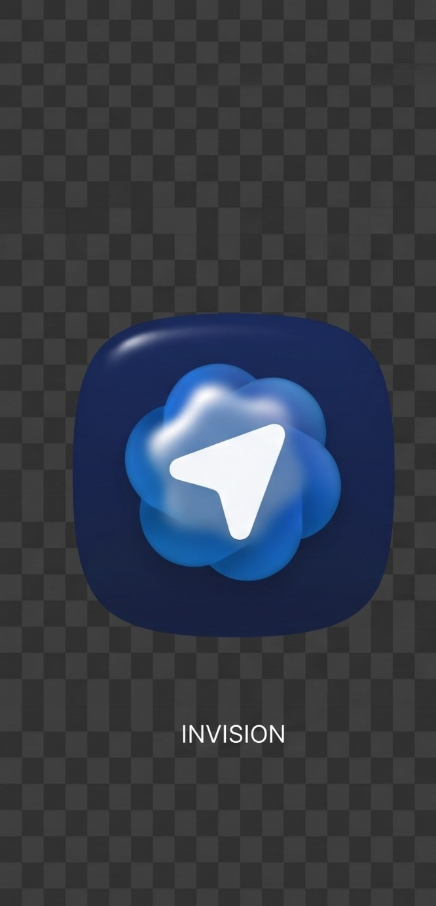

Proxy local · OpenAI compatible
Destinos
Escolha onde usar o AI Bridge
Destino
Nenhum provedor configurado
Adicione um provedor para usar o AI Bridge neste destino.
Provedores
Adicionar provedor
Presets rápidos

AI BridgeProxy local · OpenAI compatible
Escolha onde usar o AI Bridge
Nenhum provedor configurado
Adicione um provedor para usar o AI Bridge neste destino.
Presets rápidos